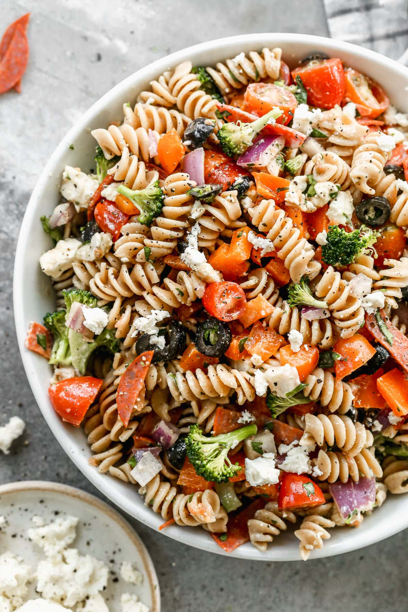

Quick Italian Pasta Salad

How to make Italian Pasta Salad
You'll find a detailed ingredient list and step-by-step instructions in the recipe below, but let's go over the basics:
Italian Pasta Salad Ingredients
These are the ingredients you will need to make this quick and easy Italian pasta salad recipe:
- Pasta: This colorful Italian pasta salad recipe starts with tri-color rotini pasta.
- Salami: Finely diced Italian salami lends meaty, salty flavor.
- Vegetables: You will need green and red bell peppers, a red onion, and canned black olives.
- Cheese: Small fresh mozzarella balls add creaminess and rich bursts of flavor. Shredded Parmesan cheese, meanwhile, is the perfect finishing touch.
- Dressing: You will need a cup of italian-style dressing.
Detailed Ingredients
- 1 package tri-color rotini pasta
- ¾ pound Italian salami, finely diced
- ½ green bell pepper, sliced
- ½ red bell pepper, sliced
- ½ red onion, chopped
- 8 ounces small fresh mozzarella balls (ciliegine)
- 1 cup Italian-style salad dressing
- 3 packages dry Italian-style salad dressing mix, or to taste
- ½ cup shredded Parmesan cheese
Directions
- Bring a large pot of lightly salted water to a boil. Cook rotini pasta at a boil until tender yet firm to the bite, about 8 minutes. Drain and rinse with cold water until cool.
- Combine pasta, salami, bell peppers, onion, mozzarella balls, and olives in a large bowl. Add salad dressing and toss to coat.
- Season pasta salad with dry salad dressing mix and stir to combine. Sprinkle with Parmesan cheese before serving.